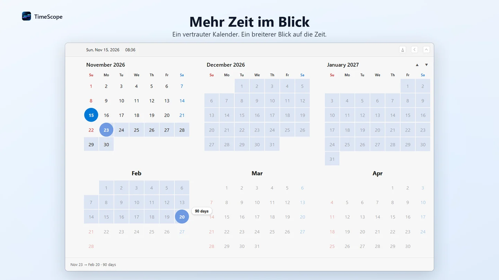
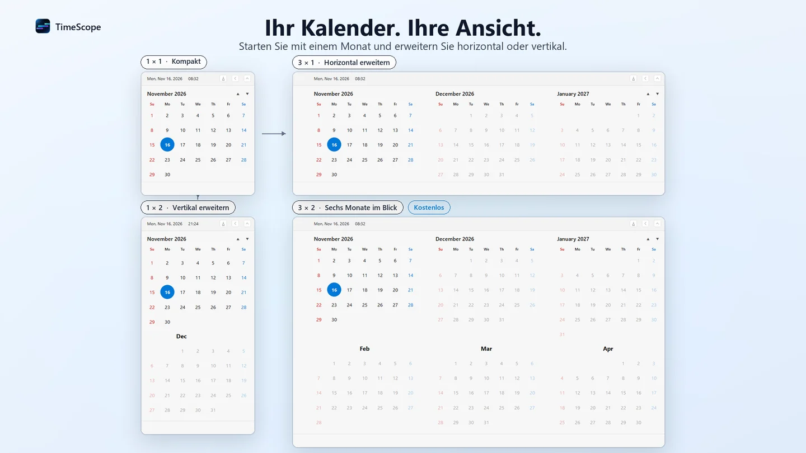
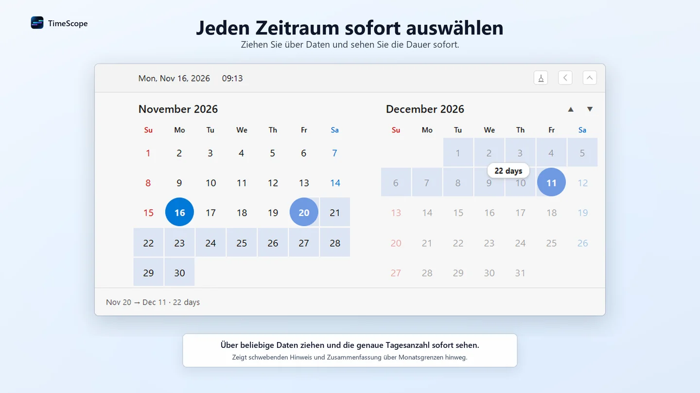
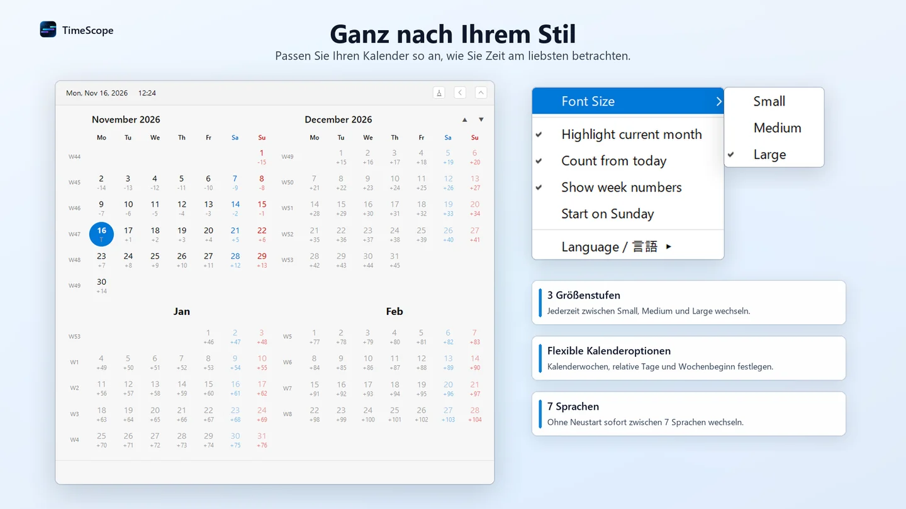
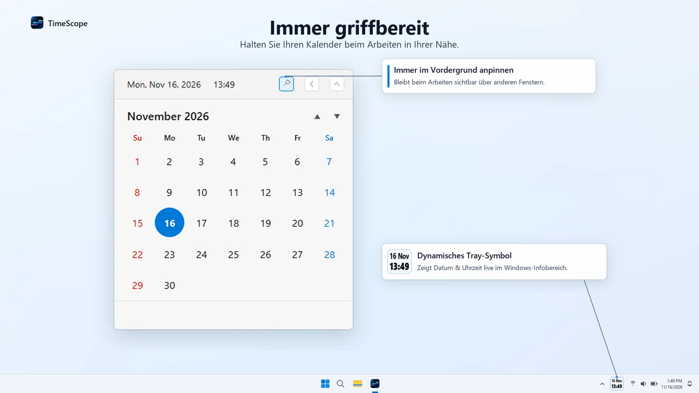

Mehr Monate auf einen Blick sehen
Starten Sie mit einem kompakten Monat und erweitern Sie horizontal und vertikal passend zu Ihrem verfügbaren Fenster- und Bildschirmplatz.
Ein leichter Desktop-Kalender für Windows, um mehrere Monate zu überblicken, Zeiträume auszuwählen und Tagesanzahlen sofort zu sehen.

Entwickelt für schnelle Datumsorientierung, präzise Tageszählung und ruhiges Arbeiten am Desktop.
Starten Sie mit einem kompakten Monat und erweitern Sie horizontal und vertikal passend zu Ihrem verfügbaren Fenster- und Bildschirmplatz.
Ziehen Sie über beliebige Tage, um einen Zeitraum hervorzuheben und die genaue Tagesanzahl direkt im schwebenden Hinweis abzulesen.
Schalten Sie Mehrfach-Zeiträume, Multi-Monitor-Auswahl sowie eigene Feiertage und Arbeitstage einmalig per In-App-Kauf frei.
Alle wichtigen Kalenderfunktionen sind kostenlos enthalten – ohne Termin- oder Cloud-Ballast.
Erweitern Sie Ihren Kalender horizontal und vertikal entsprechend dem verfügbaren Fenster- und Bildschirmplatz.

Erfassen Sie die Dauer zwischen zwei beliebigen Daten – auch über Monatsgrenzen hinweg – ganz ohne manuelles Nachzählen.

Legen Sie Wochenbeginn, Zeithinweise und Sprache direkt im Menü fest – sofort wirksam ohne Neustart.

Pinnen Sie den Kalender über andere Fenster und behalten Sie das heutige Datum über das dynamische Windows-Tray-Symbol im Blick.

Alle Kernfunktionen sind kostenlos. Optional können Sie TimeScope Pro direkt in der App über den Microsoft Store freischalten.
Alle wichtigen Funktionen für Mehrmonatsansicht, Zeitraumauswahl und Anpassung.
Optionaler einmaliger In-App-Kauf, der direkt in TimeScope über den Microsoft Store freigeschaltet wird.
TimeScope Pro ist ein einmaliges In-App-Add-on (kein Abonnement), das in der App über den Microsoft Store erworben wird ($4.99 USD Basispreis; lokale Währung und Steuern variieren je nach Region).
Echte Anwendungs-Screenshots der kostenlosen Basisversion und von TimeScope Pro.
Mehrmonatsansicht auf dem Desktop mit sechs Monaten auf einen Blick und einer durchgehenden 90-Tage-Auswahl.
Laden Sie TimeScope – Visual Calendar kostenlos im Microsoft Store für Windows 10 und Windows 11 (x64) herunter.
Im Microsoft Store laden